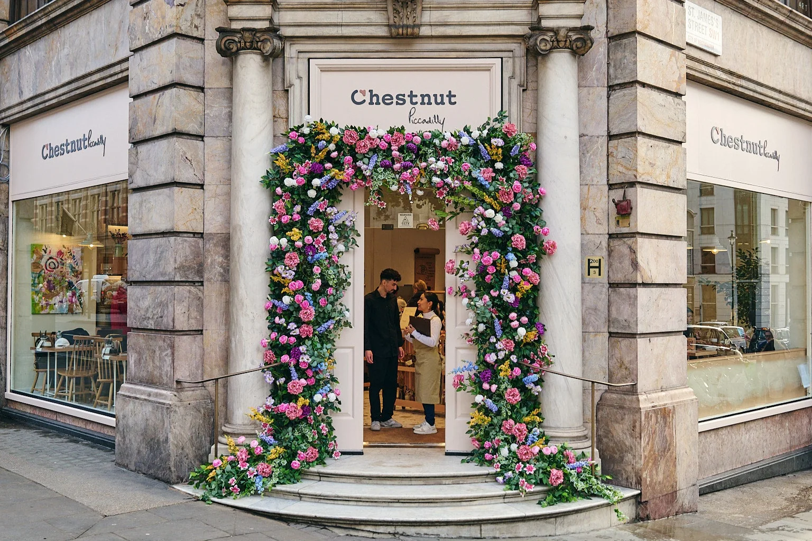

Welcome to Ayoba Bakes
Ayoba Bakes is a proudly local bakery in the heart of Polokwane, Limpopo. Every morning we fire up our ovens before sunrise to bring you warm bread, golden pastries, and cakes made from simple, honest ingredients. Whether you are grabbing a quick vetkoek on your way to work or ordering a birthday cake for someone special, we treat every order like it matters, because to us, it does.

Why People Love Us
- Everything is baked fresh, every single day.
- We use locally sourced flour and free-range eggs.
- Friendly service from a team that knows your name.
- Custom cakes for birthdays, weddings, and celebrations.

Come Say Hello
Ready to taste the difference? Take a look at our full range of baked goods or visit one of our stores in Polokwane.